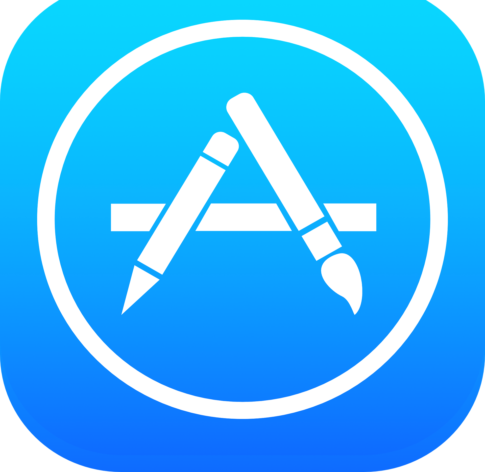

Web Rate: Online Song Rating Platform
Use Web Rate to...
- Rate songs
- Review songs
- Discuss songs with other users
See the How To Page to learn the opportunities available within the app!
Download for Free on the App Store!

Listen to what other users have to say!
Molly from New York:
"This is my favorite music app! I have so many friends and have found new artists to listen to!"
Mark from California:
"There is nothing quite like it!"